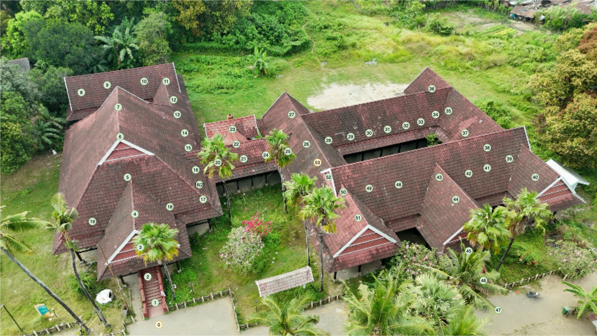

← Kembali ke Beranda
Pannellum Virtual Tour (Scenes 0 → 53)
Tampilkan Minimap
Nonaktifkan Drag

0
1
2
3
4
5
6
7
8
9
10
11
12
13
14
15
16
17
18
19
20
21
22
23
24
25
26
27
28
29
30
31
32
33
34
35
36
37
38
39
40
41
42
43
44
45
46
47
48
49
50
51
52
53